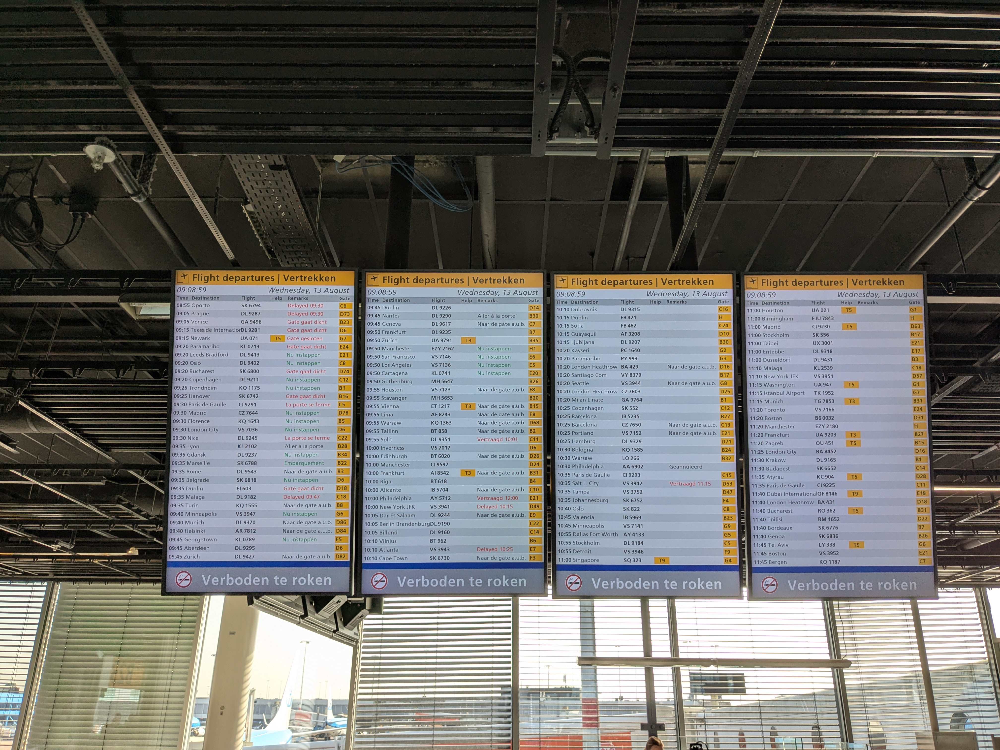

四屏航班配对与登机口拥挤
基本信息
| 题号 | ZB-TRANSIT-172600032-v2 | |
|---|---|---|
| 题名 | 四屏航班配对与登机口拥挤 | |
| 题型 | 复杂指令遵循 | |
| 辅助题型 | 计数聚合链、抗干扰文本读取 | |
| 难度 | 中等 | |
| 图片大类 | 实拍文字载体照 | |
| 图片小类 | 交通枢纽 · 机场出发航班电子屏 | |
| 素材类型 | 真实照片 | |
| 原图尺寸 | 4032 × 3024 像素 | |
| 原图文件 | zb-transit-172600032.jpg | |
| 来源 | https://commons.wikimedia.org/wiki/File:Amsterdam_Airport_Schiphol_-_Flights_departures_board_2025-08-13.jpg | |
| 作者 | Sebleouf | |
| 许可 | CC BY-SA 4.0 | |
| 许可链接 | https://creativecommons.org/licenses/by-sa/4.0 | |
| 处理记录 | 采集入库时曾重编码 JPEG 并处理 EXIF，未缩放。交付文件逐字节复制库内原图。 |

原图与打点对照

坐标使用原图像素，以左上角为原点，x 向右，y 向下。
| 编号 | 原图坐标 (x, y) | 证据说明 |
|---|---|---|
| 1 | (1887, 1372) | B 屏 T3 位于 UA9791 的 Zurich 行。正上方 DL9235 的 Help 格为空。 |
| 2 | (2157, 1770) | B 屏 DL9351 的 Gate 为 C11。它不进入候选对，但计入拥挤费。 |
| 3 | (3704, 1957) | D 屏 CI9225 也用 C11。与 B 屏的记录共同决定这行的拥挤费。 |
题目 prompt
把照片中从左到右的四块出发屏记为 A、B、C、D。以下是一项针对照片快照的排班练习。沿每块屏幕的同一条横行读取 Time（计划时间）、Destination（目的地）、Flight（航班号）、Help 和 Gate（登机口）。Help 格中印有 T 加数字时，该行带 Help 标记。只使用 Gate 为一个英文字母紧跟数字的行。时间一律取 Time 列，忽略 Remarks 列。
一对候选由两块不同屏幕上目的地完整显示名称相同的两行组成。每两行只算一对。同一块屏上若有不同航班行显示相同目的地和时间，仍按各自航班行配对。每对的时间差取绝对值，单位为分钟。每对的两个 Gate 首字母不同时，记一次字母切换。
一个完整方案由两对候选组成，四块屏各恰好用一行，两对的目的地互不相同，所用四行恰好一行带 Help 标记。交换两对的书写顺序仍算同一个方案。把屏幕组合分为 AB/CD、AC/BD、AD/BC 三类。
常规工况中，两对时间差之和每分钟计 1 成本点。拥挤工况在常规成本上每次字母切换加 50 点，再加登机口拥挤费。对方案中的每一行，在四块屏的全部现存航班行中数使用同一完整 Gate（字母和数字都相同）的其他行，每找到一行就为当前方案行加 25 点。这些其他行可以在同一屏，也可以属于方案本身，且无须能组成候选对。同一 Gate 的两行如果都在方案里，两行分别计算自己的拥挤费。
两种工况都取成本最低的完整方案。方案写成按 A、B、C、D 排列的四个航班号，去掉号内空格，保留前导零。若成本并列，先计所有最优方案，再用四个航班号的元组取字典序最小者作代表。比较字符时数字 0–9 在字母 A–Z 之前。
请按顺序给出以下五项。计数和成本均为精确整数，容差为 0。 1. 候选对数，按 AB、AC、AD、BC、BD、CD 的顺序。 2. 完整方案数，按 AB/CD、AC/BD、AD/BC 的顺序。 3. 常规工况的最低成本、最优方案数、代表方案的四个航班号。 4. 拥挤工况的最低成本、最优方案数、代表方案的四个航班号。 5. 每次从照片记录中独立撤下一个航班行，用剩余各行重新计算拥挤工况的可行方案和拥挤费。报出所有使最低成本发生变化的单行撤下情形，包括成本上升或下降。先给情形数，再按被撤航班号字典序列出「被撤航班号 → 新的最低成本」。无可行方案也算变化，新值写「无解」。
出题思路 thinking
同一时刻的 B 屏 Frankfurt 和 Zurich 只隔一行。T3 的横行归属决定 AB 的 Zurich 对能否作为唯一的 Help 来源，也决定 BD 的 Frankfurt 对是否因有两个 Help 而失去资格。错绑会改变完整方案数、两种最低成本和撤下一行的敏感情形。
图中两处 C11 属于不同航班。B 屏 Split 的 DL9351 无跨屏同名候选，仍与 D 屏 CI9225 构成同口占用。若遗漏这个对应，拥挤最低成本少 25 点。C 屏两条 Heathrow 行同目的地同时间，须用航班号和 D16、D25 保留为两个实体。
图像识别 cot_image_understanding
A–D 是从左到右的四块屏，屏内数据行从上往下编号，每屏 31 行。C 屏第 2 行 FR421、D 屏第 2 行 EJU7843 和第 15 行 EZY2180 的 Gate 为 H。C 屏第 20 行 AA6902 的 Gate 空白。这四行排除。B 屏 EZY2162 的 H1 合格，但没有合格的跨屏 Manchester 对手。C 屏第 8、11 行均显示 10:20 London Heathrow，分别是 BA429/D16 与 CZ7603/D25，各自都能与 D 屏 BA431/D18 配对。B 屏第 4 行 DL9235 的 Help 为空，下一行 UA9791 才带 T3。
所有进入候选对的航班行
| 屏 | 行 | 计划时间 | 目的地 | 航班号 | Help | Gate |
|---|---|---|---|---|---|---|
| A | 6 | 09:20 | Paramaribo | KL0713 | 空 | E24 |
| A | 8 | 09:20 | Oslo | DL9402 | 空 | C8 |
| A | 9 | 09:20 | Bucharest | SK6800 | 空 | D74 |
| A | 10 | 09:20 | Copenhagen | DL9211 | 空 | C12 |
| A | 13 | 09:30 | Paris de Gaulle | CI9291 | 空 | C5 |
| A | 14 | 09:30 | Madrid | CZ7644 | 空 | D78 |
| A | 16 | 09:30 | London City | VS7036 | 空 | D6 |
| A | 23 | 09:35 | Dublin | EI603 | 空 | D18 |
| A | 24 | 09:35 | Malaga | DL9182 | 空 | C18 |
| A | 26 | 09:40 | Minneapolis | VS3947 | 空 | G6 |
| A | 27 | 09:40 | Munich | DL9370 | 空 | D86 |
| A | 31 | 09:45 | Zurich | DL9427 | 空 | D82 |
| B | 1 | 09:45 | Dublin | DL9226 | 空 | D14 |
| B | 4 | 09:50 | Frankfurt | DL9235 | 空 | B7 |
| B | 5 | 09:50 | Zurich | UA9791 | T3 | B35 |
| B | 11 | 09:55 | Houston | VS7123 | 空 | F8 |
| B | 15 | 09:55 | Warsaw | KQ1363 | 空 | D68 |
| B | 21 | 10:00 | Frankfurt | AI8542 | T3 | B31 |
| B | 25 | 10:00 | New York JFK | VS3941 | 空 | D49 |
| C | 7 | 10:20 | Paramaribo | PY993 | 空 | G3 |
| C | 8 | 10:20 | London Heathrow | BA429 | 空 | D16 |
| C | 11 | 10:20 | London Heathrow | CZ7603 | 空 | D25 |
| C | 13 | 10:25 | Copenhagen | SK552 | 空 | C12 |
| C | 19 | 10:30 | Warsaw | LO266 | 空 | B32 |
| C | 21 | 10:35 | Paris de Gaulle | CI9293 | 空 | C15 |
| C | 25 | 10:40 | Oslo | SK822 | 空 | C8 |
| C | 27 | 10:45 | Minneapolis | VS7141 | 空 | G9 |
| C | 29 | 10:55 | Stockholm | DL9184 | 空 | C5 |
| D | 1 | 11:00 | Houston | UA021 | T5 | G1 |
| D | 3 | 11:00 | Madrid | CI9230 | T5 | D63 |
| D | 4 | 11:00 | Stockholm | SK556 | 空 | B17 |
| D | 8 | 11:10 | Malaga | KL2539 | 空 | C18 |
| D | 9 | 11:10 | New York JFK | VS3951 | 空 | D57 |
| D | 12 | 11:15 | Munich | TG7853 | T3 | B31 |
| D | 16 | 11:20 | Frankfurt | UA9203 | T3 | B27 |
| D | 18 | 11:25 | London City | BA8452 | 空 | D16 |
| D | 22 | 11:35 | Paris de Gaulle | CI9225 | 空 | C11 |
| D | 24 | 11:40 | London Heathrow | BA431 | 空 | D18 |
| D | 25 | 11:40 | Bucharest | RO362 | T5 | B31 |
候选用到的重复 Gate
| Gate | 行数 | 屏与航班号 |
|---|---|---|
| B17 | 2 | C VY8379、D SK556 |
| B27 | 2 | C IB5235、D UA9203 |
| B31 | 3 | B AI8542、D TG7853、D RO362 |
| B7 | 2 | B DL9235、D SK6776 |
| C11 | 2 | B DL9351、D CI9225 |
| C12 | 2 | A DL9211、C SK552 |
| C18 | 2 | A DL9182、D KL2539 |
| C5 | 2 | A CI9291、C DL9184 |
| C8 | 2 | A DL9402、C SK822 |
| D16 | 2 | C BA429、D BA8452 |
| D18 | 2 | A EI603、D BA431 |
| D6 | 5 | A DL9281、A VS7036、A SK6818、A DL9295、B VS7017 |
| E24 | 2 | A KL0713、D VS7166 |
| G1 | 2 | D UA021、D UA947 |
| G6 | 2 | A VS3947、D LY338 |
其余候选用到的 Gate 在全图只出现一次。
题目推理 cot_reasoning
用完整目的地名在六个跨屏组合中配对。AB、AC、AD、BC、BD、CD 分别有 2、5、6、1、4、4 对。
| 跨屏 | 目的地 | 航班配对 | 带 Help 行数 |
|---|---|---|---|
| AB | Dublin | EI603 / DL9226 | 0 |
| AB | Zurich | DL9427 / UA9791 | 1 |
| AC | Paramaribo | KL0713 / PY993 | 0 |
| AC | Oslo | DL9402 / SK822 | 0 |
| AC | Copenhagen | DL9211 / SK552 | 0 |
| AC | Paris de Gaulle | CI9291 / CI9293 | 0 |
| AC | Minneapolis | VS3947 / VS7141 | 0 |
| AD | Bucharest | SK6800 / RO362 | 1 |
| AD | Paris de Gaulle | CI9291 / CI9225 | 0 |
| AD | Madrid | CZ7644 / CI9230 | 1 |
| AD | London City | VS7036 / BA8452 | 0 |
| AD | Malaga | DL9182 / KL2539 | 0 |
| AD | Munich | DL9370 / TG7853 | 1 |
| BC | Warsaw | KQ1363 / LO266 | 0 |
| BD | Frankfurt | DL9235 / UA9203 | 1 |
| BD | Houston | VS7123 / UA021 | 1 |
| BD | Frankfurt | AI8542 / UA9203 | 2 |
| BD | New York JFK | VS3941 / VS3951 | 0 |
| CD | London Heathrow | BA429 / BA431 | 0 |
| CD | London Heathrow | CZ7603 / BA431 | 0 |
| CD | Paris de Gaulle | CI9293 / CI9225 | 0 |
| CD | Stockholm | DL9184 / SK556 | 0 |
依次取 AB×CD、AC×BD、AD×BC。三个乘积有 8、20、6 种，两对目的地在这些乘积中均不同。按四行恰有一个 Help 筛成 4、10、3 种。每个方案在唯一的屏幕分组下枚举一次。
常规成本最低方案由 Zurich 和 Stockholm 组成，时间差为 5 与 5 分钟，共 10 点。它有两次字母切换，C5 和 B17 各多一行，拥挤成本为 10 + 2×50 + 2×25 = 160 点。
拥挤工况最优方案由 Zurich 和 Paris de Gaulle 组成。两对时间差为 5 与 60 分钟，只有 Zurich 发生字母切换。四行的 Gate 为 D82、B35、C15、C11，只有 C11 另有一行，故成本为 65 + 50 + 25 = 140 点。两工况均唯一最优。枚举时仍先保留全部同分最优方案，再按 A、B、C、D 航班号元组取字典序首项。
依次撤下 124 个航班行。每次删除包含该行的完整方案，再用剩余行重算所有方案的 Gate 重数。以下八种使最低成本变化。
| 撤下航班 | 新最低成本（点） | 复算依据 |
|---|---|---|
| CI9225 | 160 | 原最优方案失效。Heathrow 的 CZ7603 组合与 Stockholm 组合并列。 |
| CI9291 | 135 | C5 少一行，复用 C5 的 Stockholm 组合降至 135 点。 |
| CI9293 | 160 | 原最优方案失效。Heathrow 的 CZ7603 组合与 Stockholm 组合并列。 |
| DL9351 | 115 | C11 少一行，原最优方案少付 25 点。 |
| DL9427 | 175 | 全部含 Zurich 的完整方案失效，Madrid / Warsaw 组合以 175 点取胜。 |
| EI603 | 135 | D18 少一行，Heathrow 的 CZ7603 组合降至 135 点。 |
| UA9791 | 175 | 全部含 Zurich 的完整方案失效，Madrid / Warsaw 组合以 175 点取胜。 |
| VY8379 | 135 | B17 少一行，复用 B17 的 Stockholm 组合降至 135 点。 |
标准答案 response
1. 2，5，6，1，4，4 2. 4，10，3 3. 10 点，1 个，DL9427、UA9791、DL9184、SK556 4. 140 点，1 个，DL9427、UA9791、CI9293、CI9225 5. 8 种 CI9225 → 160 点 CI9291 → 135 点 CI9293 → 160 点 DL9351 → 115 点 DL9427 → 175 点 EI603 → 135 点 UA9791 → 175 点 VY8379 → 135 点
逐字段判分口径
| 项 | 口径 |
|---|---|
| 1 | 六个候选对数逐个比较，按 AB、AC、AD、BC、BD、CD。 |
| 2 | 三个完整方案数逐个比较，按 AB/CD、AC/BD、AD/BC。 |
| 3、4 | 成本点、最优方案数、四个有序航班号各自比较。航班号保留前导零。 |
| 5 | 分别核对情形数及有序撤下清单中的各航班号和新成本。完整清单须无缺漏、额外项或重复。 |
整数和成本的容差均为 0。标点、分隔空格及等值数值写法可规范化。整题正确须全部字段匹配。
质检与复算摘要
离线质检判定为 authoring_candidate。124 个航班行全部核对，8 个关键区域可在原生像素下读取。逐行框无重叠候选。84 对近色异类行共享相似底色，按横行、字段列及字符区分。汉字覆盖 0%，无可辨识人脸及遮挡图证的水印。题目使用离散读数，连续测距阈值与误差比不适用。
只读题面或单屏裁图无法恢复跨屏配对及完整登机口重数。题目允许查看含四屏的裁图并编程求解。场景去重覆盖本地已登记条目与现有题包，工作区未提供单独的全项目排除表。
| 读法 | 完整方案数 | 常规最低（点） | 拥挤最低（点） | 撤下情形数 |
|---|---|---|---|---|
| 正确读法 | 4 / 10 / 3 | 10 | 140 | 8 |
| 把 B 屏 T3 上移一行 | 0 / 5 / 3 | 125 | 175 | 4 |
| 把 B 屏 DL9351 的 C11 误读为 C1 | 4 / 10 / 3 | 10 | 115 | 4 |
冻结版的 3 次独立盲答均完整且整题全对，关键错答字段为零，超时、故障和残缺均为零。第一版 3 次全对后加入 Gate 重数及撤下行后的动态重算。新版仍为 3 次全对，登记为中等难度。